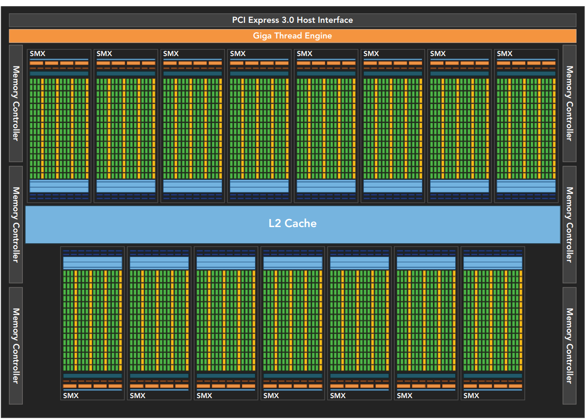

CUDA Execution Model¶
GPU architecture Overview¶
- The GPU architecture is built around a scalable array of Streaming Multiprocessors (SM). GPU hardware parallelism is achieved through the replication of this architectural building block.
- CUDA employs a Single Instruction Multiple Thread (SIMT) architecture to manage and execute threads in groups of 32 called warps. All threads in a warp execute the same instruction at the same time. Each thread has its own instruction address counter and register state, and carries out the current instruction on its own data. Each SM partitions the thread blocks assigned to it into 32-thread warps that it then schedules for execution on available hardware resources.
- SIMT architecture is similar to the SIMD (Single Instruction, Multiple Data) architecture. Both SIMD and SIMT implement parallelism by broadcasting the same instruction to multiple execution units. A key difference is that SIMD requires that all vector elements in a vector execute together in a unified synchronous group, whereas SIMT allows multiple threads in the same warp to execute independently. Even though all threads in a warp start together at the same program address, it is possible for individual threads to have different behavior. SIMT enables you to write thread-level parallel code for independent, scalar threads, as well as data-parallel code for coordinated threads.
- The SIMT model includes three key features that SIMD does not: Each thread has its own instruction address counter. Each thread has its own register state. Each thread can have an independent execution path.
Streaming MultiProcessor¶
SM: The Heart of GPU architecture

The Streaming Multiprocessor (SM) is the heart of the GPU architecture. Registers and shared memory are scarce resources in the SM. CUDA partitions these resources among all threads resident on an SM. Therefore, these limited resources impose a strict restriction on the number of active warps in an SM, which corresponds to the amount of parallelism possible in an SM. Knowing some basic facts about the hardware components of an SM will help you organize threads and configure kernel execution to get the best performance.
Fermi Architecture¶
Figure illustrates a logical block diagram of the Fermi architecture focused on GPU computing with graphics-specific components largely omitted. Fermi features up to 512 accelerator cores, called CUDA cores. Each CUDA core has a fully pipelined integer arithmetic logic unit (ALU) and a floating-point unit (FPU) that executes one integer or floating-point instruction per clock cycle. The CUDA cores are organized into 16 streaming multiprocessors (SM), each with 32 CUDA cores. Fermi has six 384-bit GDDR5 DRAM memory interfaces supporting up to a total of 6 GB of global on-board memory, a key compute resource for many applications. A host interface connects the GPU to the CPU via the PCI Express bus. The GigaThread engine (shown in orange on the left side of the diagram) is a global scheduler that distributes thread blocks to the SM warp schedulers.

Fermi includes:
- a coherent 768KB L2 cache,shared by all 16 SMs.
- Each SM (in figure above) is represented by a vertical rectangular strip containing:
- Execution units(CUDA cores)
- Scheduler and dispatcher units that schedule warps
- shared Memory,the register file,and L1 cache.
- LD/ST units
- SFU(special function units) : execute intrinsic instruction such as sine,cosine,square root,and interpolation
- Each SM Features two warp schedulers and two instruction dispatch units.
The Kepler Architecture¶
The Kepler GPU architecture, released in the fall of 2012, is a fast and highly efficient, high-performance computing architecture. Kepler features make hybrid computing even more accessible to you.
Figure illustrates the Kepler K20X chip block diagram, containing 15 streaming multiprocessors (SMs) and six 64-bit memory controllers. Three important innovations in the Kepler architecture are:
➤ Enhanced SMs
➤ Dynamic Parallelism
➤ Hyper-Q



Profile-Driven Optimization¶
Profiling is the act of analyzing program performance by measuring:
➤ The space (memory) or time complexity of application code
➤ The use of particular instructions
➤ The frequency and duration of function calls
Profiling often requires a basic understanding of the execution model of a platform to help make
application optimization decisions.
Profiling tools provide deep insight into kernel performance and help you identify bottlenecks in
kernels. CUDA provides two primary profiling tools: nvvp, a standalone visual profiler; and nvprof,
a command-line profiler
- nvvp
- nvprof
- nvvp is a Visual Profiler, which helps you to visualize and optimize the performance of your CUDA program. This tool displays a timeline of program activity on both the CPU and GPU, helping you to identify opportunities for performance improvement. In addition, nvvp analyzes your application for potential performance bottlenecks and suggests actions to take to eliminate or reduce those bottlenecks. The tool is available as both a standalone application and as part of the Nsight Eclipse Edition (nsight).
- nvprof collects and displays profiling data on the command line. nvprof was introduced with
CUDA 5 and evolved from an older command-line CUDA profiling tool. Like nvvp, it enables the
collection of a timeline of CUDA-related activities on both the CPU and GPU, including kernel execution, memory transfers, and CUDA API calls. It also enables you to collect hardware counters and
performance metrics for CUDA kernels.

Understanding the nature of warp execution¶
- This chapter has already covered the concept of grouping 32 threads into a single execution unit: a warp. Now you will take a closer look at warp execution from the hardware perspective, and gain insights that will help guide kernel design.
- Warps are the basic unit of execution in an SM. When you launch a grid of thread blocks, the thread blocks in the grid are distributed among SMs. Once a thread block is scheduled to an SM, threads in the thread block are further partitioned into warps. A warp consists of 32 consecutive threads and all threads in a warp are executed in Single Instruction Multiple Thread (SIMT) fashion; that is, all threads execute the same instruction, and each thread carries out that operation on its own private data.
- Threads in the same warp executing different instructions is referred to as warp divergence. Warp divergence would seem to cause a paradox, as you already know that all threads in a warp must execute the same instruction on each cycle.
- Warp divergence can cause significantly degraded performance.
- To obtain the best performance, you should avoid different execution paths within the same warp.
- If you interleave data using a warp approach (instead of a thread approach), you can avoid warp divergence and achieve 100 percent utilization of the device. The condition (tid/warpSize)%2==0 forces the branch granularity to be a multiple of warp size; the even warps take the if clause, and the odd warps take the else clause. This kernel produces the same output, but in a different order.
- You can also directly observe warp divergence by using the nvprof profiler to collect metrics from the GPU. Here, nvprof’s branch_efficiency metric is calculated for a sample execution of simpleDivergence:
$ nvprof --metrics branch_efficiency ./simpleDivergence

Occupancy¶
occupancy is the ratio of active warps to maximum number of warps, per SM.
occupancy = active warps/maximum warps
CHECK YOUR GPU using this file: cuda_gpu_info.cu
#include <sys/time.h>
#include <stdio.h>
#include <cuda_runtime.h>
#define CHECK(call) \
{ \
const cudaError_t error = call; \
if (error != cudaSuccess) \
{ \
fprintf(stderr, "Error: %s:%d, ", __FILE__, __LINE__); \
fprintf(stderr, "code: %d, reason: %s\n", error, \
cudaGetErrorString(error)); \
} \
}
/*
* Fetches basic information on the first device in the current CUDA platform,
* including number of SMs, bytes of constant memory, bytes of shared memory per
* block, etc.
*/
int main(int argc, char *argv[])
{
int iDev = 0;
cudaDeviceProp iProp;
CHECK(cudaGetDeviceProperties(&iProp, iDev));
printf("Device %d: %s\n", iDev, iProp.name);
printf(" Number of multiprocessors: %d\n",
iProp.multiProcessorCount);
printf(" Total amount of constant memory: %4.2f KB\n",
iProp.totalConstMem / 1024.0);
printf(" Total amount of shared memory per block: %4.2f KB\n",
iProp.sharedMemPerBlock / 1024.0);
printf(" Total number of registers available per block: %d\n",
iProp.regsPerBlock);
printf(" Warp size: %d\n",
iProp.warpSize);
printf(" Maximum number of threads per block: %d\n",
iProp.maxThreadsPerBlock);
printf(" Maximum number of threads per multiprocessor: %d\n",
iProp.maxThreadsPerMultiProcessor);
printf(" Maximum number of warps per multiprocessor: %d\n",
iProp.maxThreadsPerMultiProcessor / 32);
return EXIT_SUCCESS;
}
nvcc cuda_gpu_info.cu -o cuda_gpu_info
Device 0: GeForce GTX 1080
Number of multiprocessors: 20
Total amount of constant memory: 64.00 KB
Total amount of shared memory per block: 48.00 KB
Total number of registers available per block: 65536
Warp size: 32
Maximum number of threads per block: 1024
Maximum number of threads per multiprocessor: 2048
Maximum number of warps per multiprocessor: 64
The registers per thread and shared memory per block resource usage can be obtained from nvcc with the following compiler flag:
--ptxas-options=-v

- Checking Active Warps with nvprof
$ nvprof --metrics achieved_occupancy ./sumMatrix 32 32
- Checking Memory Operations with nvprof
$ nvprof --metrics gld_throughput./sumMatrix 32 32
sumMatrixOnGPU2D <<<(512,512), (32,32)>>> Global Load Throughput 35.908GB/s
$ nvprof --metrics gld_throughput./sumMatrix 32 16
sumMatrixOnGPU2D <<<(512,1024), (32,16)>>> Global Load Throughput 56.478GB/s
$ nvprof --metrics gld_throughput./sumMatrix 16 32
sumMatrixOnGPU2D <<<(1024,512), (16,32)>>> Global Load Throughput 85.195GB/s
$ nvprof --metrics gld_throughput./sumMatrix 16 16
sumMatrixOnGPU2D <<<(1024,1024),(16,16)>>> Global Load Throughput 94.708GB/s
Next, check the global load efficiency using the gld_efficiency metric, which is the ratio of
requested global load throughput to required global load throughput. It measures how well the
application’s load operations use device memory bandwidth. The results are summarized below:
$ nvprof --metrics gld_efficiency ./sumMatrix 32 32
sumMatrixOnGPU2D <<<(512,512), (32,32)>>> Global Memory Load Efficiency 100.00%
$ nvprof --metrics gld_efficiency ./sumMatrix 32 16
sumMatrixOnGPU2D <<<(512,1024), (32,16)>>> Global Memory Load Efficiency 100.00%
$ nvprof --metrics gld_efficiency ./sumMatrix 16 32
sumMatrixOnGPU2D <<<(1024,512), (16,32)>>> Global Memory Load Efficiency 49.96%
$ nvprof --metrics gld_efficiency ./sumMatrix 16 16
sumMatrixOnGPU2D <<<(1024,1024),(16,16)>>> Global Memory Load Efficiency 49.80%